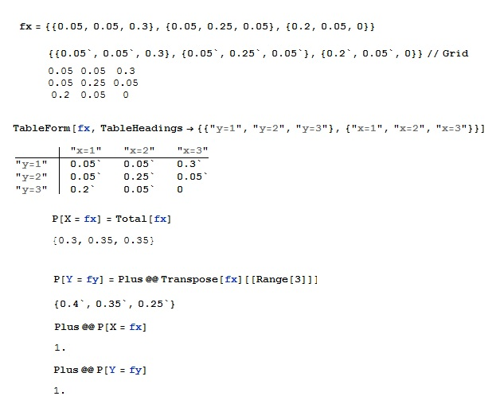
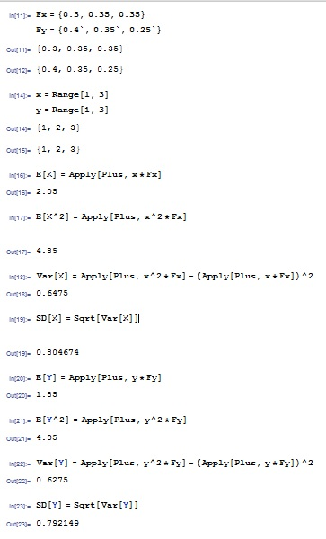
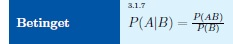
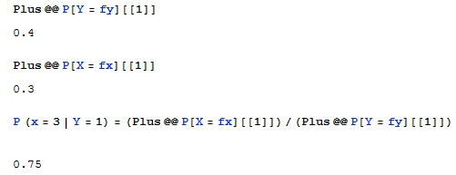
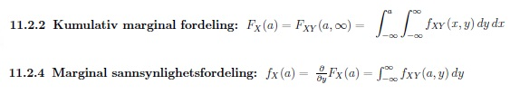
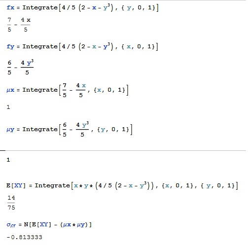

Marginale sannsynligheter, forventning, varians, standardavvik, kovarians.
Marginale sannsynligheter for diskrete X og Y:
For stokastiske flervariable
1. Gi navn på funksjonen med variablene og skriv i form
In[1]:= {x1,x2,x3},{x4,x5,x6},{...xn}
2. Sett opp tabel over de gitte variablene
In[2]:= TableForm[fx,
TableHeadings -> {{"navn på kolonnevariabler}, {"navn på rad variabler"}}]
3. Regn ut marginale sannsynligheter etter kolonne, fx
In[3]:= Total[fx]
og marginale sannsynligheter fy, dvs. sum av variabler etter rad
In[4]:= Plus @@ Transpose[fy][[Range[matrise størrelse]]]
4. Du kan kontrollere at summen av variablene er lik 1
In[5]:= Plus @@ P[X = fx]
og
In[6]:= Plus @@ P[Y = fy]
Eksempel:

Forventning, 2. moment, varians, standardavvik:
1. Gi nytt navn til de marginale sannsynlighetene du fant, for eksempel Fx. For å finne μX=E[X] skriv som innput
In[1]:= Apply[Plus, x*Fx]
og for μY=E[Y]
In[2]:=Apply[Plus, y*Fy]
2. For å finne 2. moment E[X^2] skriv som innput
In[3]:= Apply[Plus, x^2*Fx]
og for E[Y^2]
In[4]:=Apply[Plus, y^2*Fy]
3.Programmer σ2X.
In[5]:=Apply[Plus, x^2*Fx] - (Apply[Plus, x*Fx])^2
og σ2Y.
In[6]:=Apply[Plus, y^2*Fy] - (Apply[Plus, y*Fy])^2
4. Ta kvadratrot av svaret for å finne σX og σY.
In[6]:= Sqrt[Var[X]]
og
In[7]:= Sqrt[Var[Y]]
Eksempel:

Sannsynlighet:
Den betingede sannsynlighetsfordelingen for X kan finnes hvis det er gitt en spesiell verdi for Y ( eller omvendt). Hvis vi tar bare første kolonnen så er Y = 1. Vi bruker definisjonen av betinget sannsynlighet:

1. For å finne marginsannsynlighet til første rad. Skriv
In[1]:=Plus @@ P[Y = fy][[1]]
og til første kolonne
In[2]:=Plus @@ P[X = fx][[1]]
2. Nå kan sannsynlighet P(X=Y) finnes ved
In[3]:=P (x = 3 | Y = 1) = (Plus @@ P[X = fx][[1]])/(Plus @@ P[Y = fy][[1]])

Marginale sannsynlighetsfordelinger for kontinuerlig X og Y:

Eksempel:
Vi ser på oppgave med fz=4/5(2-x-y^3) for x,y∈[0,1]
1. Gi et navn til funksjonen, for eksempel fx og integrer den. For å finne fx skriv som innput
In[1]:= fx = Integrate[4/5 (2 - x - y^3), { y, 0, 1}]
og for fy
In[2]:=Integrate[4/5 (2 - x - y^3), { x, 0, 1}]
2. μX=E[X]
In[3]:= Integrate[7/5 - (4 x)/5, {x, 0, 1}]
og for μY=E[Y]
In[4]:=Integrate[6/5 - (4 y^3)/5, {y, 0, 1}]
3. E[XY] σ2X.
In[5]:=Integrate[x*y*(4/5 (2 - x - y^3)), {x, 0, 1}, { y, 0, 1}]
4. Finn kovariansen σXY
In[6]:=N[E[XY] - (μx*μy)]
